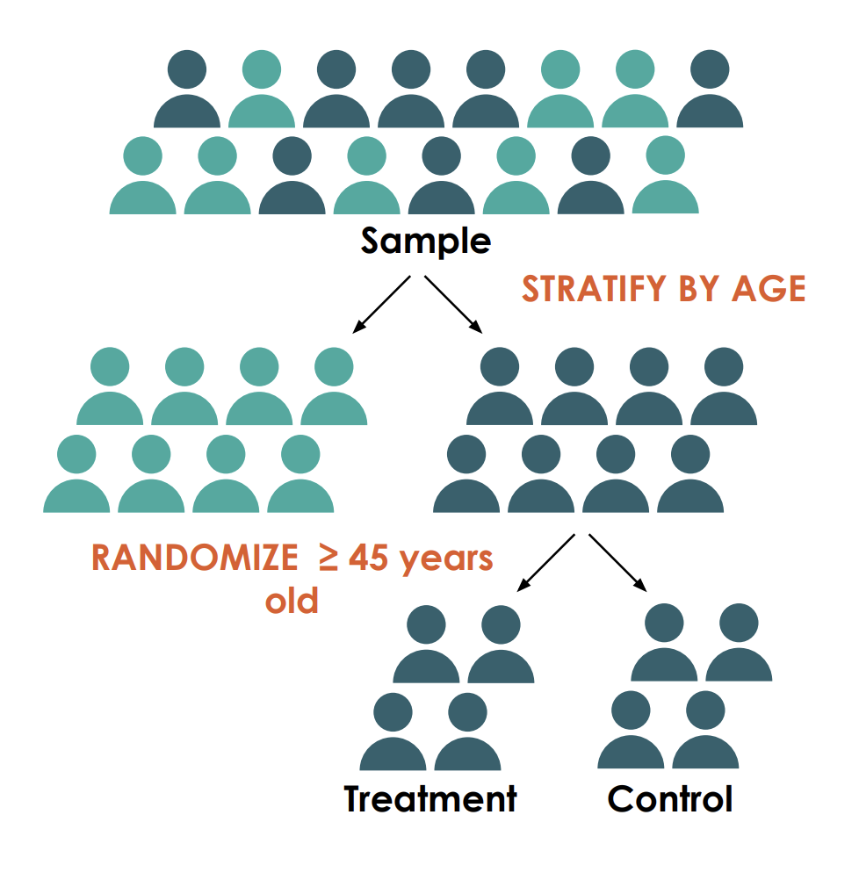

flowchart TD
%% Top nodes - conditions
A["Non-zero probability condition"]:::gold
B["Individualism condition"]:::gold
C["Unconfoundedness condition"]:::gold
%% Middle node - mechanisms
D{{"Classical Random Assignment Mechanisms"}}:::tarHeelRed
%% Assignment types
E["Bernoulli Trial"]:::carolinaBlue
F["Complete Randomized\nExperiment (CRE)"]:::carolinaBlue
G["Stratified Randomization"]:::carolinaBlue
H["Rerandomization"]:::carolinaBlue
I["Matched Pairs"]:::carolinaBlue
%% Bottom node - inference
J{{"Design-conscious Inference"}}:::uncGreen
%% Connections
A --> D
B --> D
C --> D
D --> E
D --> F
D --> G
D --> H
D --> I
E --> J
F --> J
G --> J
H --> J
I --> J
%% UNC Brand Colors
classDef gold fill:#FFD100,stroke:#13294B,stroke-width:1px,color:#13294B
classDef tarHeelRed fill:#DC143C,stroke:#13294B,stroke-width:1px,color:#FFFFFF
classDef carolinaBlue fill:#4B9CD3,stroke:#13294B,stroke-width:1px,color:#FFFFFF
classDef uncGreen fill:#8DB434,stroke:#13294B,stroke-width:1px,color:#FFFFFF
Unit 2.2: Advanced Randomization Techniques
Randomization: The Foundation of Causal Inference
- Last session: Maximizing power through optimal experimental design
- Today: The art and science of randomization
- Randomization enables causal claims by balancing all factors:
- Observable characteristics
- Unobservable characteristics
- Potential outcomes
Emphasize that randomization is what allows us to make causal claims - it’s the key distinction between experimental and observational studies.
Why Does Randomization Work?
Because it ensures:
- Non-zero probability condition: Everyone has a chance of treatment
- Individualism: Independence across units
- Unconfoundedness: Balance on observed/unobserved covariates
\[E[Y_i(0)|D_i=1] = E[Y_i(0)|D_i=0]\]
The untreated potential outcomes are the same in both groups!
What You Need for Randomization
- Sample of units: Who or what will be randomized
- Allocation ratio: How many units to each condition
- Randomization device: Physical or computational
- Baseline covariates: (for some approaches)
Random Sampling vs. Random Assignment

Classical Assignment Mechanisms Framework
Classical Assignment Mechanisms
- Bernoulli Trials
- Complete Randomization
- Re-randomization
- Stratified Randomization
- Matched-Pair Designs
Bernoulli Trials
- Simplest approach: independent coin flips
- \(P(Z_i = 1) = p\) for all units \(i\)
Advantages:
- Simple to implement
- Can randomize as participants arrive
- No baseline data needed
Disadvantages:
- Random group sizes
- Potential imbalance on key covariates
- Implementation vulnerability
Case Study: The Canadian National Breast Screening Study
- Major randomized trial evaluating mammography screening effectiveness
- Used alternating assignment (first to treatment, second to control)
- Design flaw: clinical breast exams conducted before randomization
- Nurses and physicians could (and did) influence group assignments
CNBSS: Randomization Failures
- Pre-randomization examination: Detected suspicious lumps before group assignment
- Selection bias: Women with palpable lumps disproportionately assigned to mammography group
- Inadequate concealment: Study staff could influence group assignments
- Evidence of manipulation: Names overwritten, identities reversed, lines skipped
Result: Mammography group had 68% higher incidence of advanced cancers at baseline!
CNBSS: Impact on Study Validity
- Study reported no mortality benefit from mammography screening
- However: The randomization bias likely masked true benefits
- Higher-risk patients concentrated in treatment group
- Control group contamination: ~25% received mammograms outside the study
Broader lesson: Compromise in randomization can fundamentally undermine study validity and lead to decades of scientific controversy
Complete Randomization
set.seed(072311) # Set seed for reproducibility
# Parameters
N <- 100 # Total number of units
p <- 0.5 # Proportion to assign to treatment
# Generate random numbers and sort
units <- data.frame(
id = 1:N,
random_num = runif(N)
)
units <- units[order(units$random_num),]
# Assign first p% to treatment
units$treatment <- 0
units$treatment[1:(N*p)] <- 1
# Check resulting allocation
table(units$treatment)
0 1
50 50 Each participant has fixed probability of assignment, with total group sizes fixed in advance.
Chance Imbalance with Complete Randomization
Even with perfect implementation, covariates may be imbalanced
-
Example: In a study of 722 people (NLSY data):
- ~45% of randomizations had all covariates balanced
- ~30% had one imbalanced covariate
- Remaining had multiple imbalanced covariates
This raises two critical questions: 1. How can we ensure better balance in design? 2. What do we do if imbalance occurs?
Re-randomization
- Generate multiple randomizations
- Keep only those with good balance
- Approach 1: All p-values > threshold (e.g., 0.05)
- Approach 2: Choose iteration with best overall balance
Re-randomization Code
balance_check <- function(data, treatment_var, balance_vars) {
# Initialize minimum p-value
min_pval <- 1
# Check each covariate
for (var in balance_vars) {
# T-test for continuous variables
t_result <- t.test(data[[var]] ~ data[[treatment_var]])
min_pval <- min(min_pval, t_result$p.value)
}
return(min_pval)
}
# Re-randomization function
rerandomize <- function(data, p_threshold = 0.1, max_attempts = 1000) {
n <- nrow(data)
n_treat <- floor(n * 0.5) # 50% to treatment
attempts <- 0
repeat {
# Generate a new randomization
treatment <- rep(0, n)
treatment[sample(1:n, n_treat)] <- 1
data$treatment <- treatment
# Check balance
pval <- balance_check(data, "treatment", c("age", "income", "education"))
attempts <- attempts + 1
# Accept if p-value threshold met or max attempts reached
if (pval > p_threshold || attempts >= max_attempts) {
break
}
}
return(list(treatment = data$treatment, attempts = attempts, min_pval = pval))
}This function repeats randomization until finding one where all p-values exceed our threshold.
Drawbacks of Re-randomization
- Opaque constraints: “Black box” process
- Unusual handling of outliers
- Computationally expensive
- Could run forever if criteria too strict
- Statistical inference must account for the procedure
- Cannot balance on unobserved covariates
Stratified (Block) Randomization

- Divide sample into strata based on covariates
- Randomize separately within each stratum
- Perfect balance on stratification variables
Implementing Stratified Randomization
set.seed(072311)
# Create example data with categorical covariates
data <- data.frame(
id = 1:100,
gender = sample(c("Male", "Female"), 100, replace = TRUE),
age_group = sample(c("Under 30", "30-50", "Over 50"), 100, replace = TRUE),
stringsAsFactors = FALSE
)
# Create strata based on combinations of covariates
data$stratum <- paste(data$gender, data$age_group, sep = "_")
# Function for stratified randomization
stratified_randomize <- function(data, strata_var, p = 0.5) {
# Initialize assignment vector
assignment <- rep(NA, nrow(data))
# Get unique strata
strata <- unique(data[[strata_var]])
# Randomize within each stratum
for (s in strata) {
# Get indices for this stratum
indices <- which(data[[strata_var]] == s)
n_stratum <- length(indices)
# Calculate number to assign to treatment
n_treat <- round(n_stratum * p)
# Ensure at least one in each group if possible
if (n_stratum > 1) {
n_treat <- min(max(n_treat, 1), n_stratum - 1)
} else {
n_treat <- sample(0:1, 1) # Random for singletons
}
# Perform randomization within stratum
treat_indices <- sample(indices, n_treat)
assignment[indices] <- 0
assignment[treat_indices] <- 1
}
return(assignment)
}
# Apply stratified randomization
data$treatment <- stratified_randomize(data, "stratum")
# Check balance by strata
table(data$stratum, data$treatment)
0 1
Female_30-50 11 10
Female_Over 50 8 8
Female_Under 30 7 7
Male_30-50 9 9
Male_Over 50 7 8
Male_Under 30 8 8This code creates strata from combinations of gender and age group, then randomizes within each stratum.
Selecting Stratification Variables
- Discrete variables are easier to implement
- Prioritize variables that strongly predict outcomes
- Include variables where heterogeneous effects are expected
- Be careful of too many strata - causes “small cell” problems
Handling “misfits” (when strata size not divisible by treatments):
- Remove units randomly
- Create separate strata for misfits
- Use different randomization approach for misfits
Matched Pairs Randomization
- Create pairs of similar units
- Randomize one to treatment within each pair
- Like stratification taken to the extreme
- Perfect for continuous covariates
Implementing Matched Pairs
library(optmatch) # For optimal matching
# Generate example data
set.seed(072311)
data <- data.frame(
id = 1:100,
age = rnorm(100, 45, 10),
income = rnorm(100, 50000, 15000),
health_score = rnorm(100, 70, 15)
)
# Create distance matrix based on covariates
X <- as.matrix(data[, c("age", "income", "health_score")])
X_scaled <- scale(X) # Standardize to have equal importance
dist_matrix <- dist(X_scaled)
# Create optimal matches
matches <- pairmatch(dist_matrix, data = data)
data$pair_id <- matches
# Randomize within pairs
pair_randomize <- function(data, pair_var) {
# Initialize assignment vector
assignment <- rep(NA, nrow(data))
# Get unique pairs
pairs <- unique(data[[pair_var]])
pairs <- pairs[!is.na(pairs)] # Remove NA pairs
# Randomize within each pair
for (p in pairs) {
# Get indices for this pair
indices <- which(data[[pair_var]] == p)
# Skip if not exactly 2 units
if (length(indices) != 2) next
# Randomly assign one to treatment
treat_index <- sample(indices, 1)
assignment[indices] <- 0
assignment[treat_index] <- 1
}
return(assignment)
}
# Apply pair randomization
data$treatment <- pair_randomize(data, "pair_id")This code matches participants based on age, income, and health score, then randomizes one member of each pair to treatment.
Balance Tests: Approaches for Verification
- Individual covariate tests: t-tests, Chi-square tests
- Joint omnibus tests: F-tests testing multiple covariates simultaneously
- Regression-based tests: Regress treatment on covariates
- Standardized differences: Sample size-independent assessment
Standardized Differences for Large Samples
- Problem with p-values: With large samples, tiny imbalances become “significant”
- Solution: Standardized mean difference (SMD)
\[SMD = \frac{\bar{X}_{treatment} - \bar{X}_{control}}{\sqrt{\frac{s^2_{treatment} + s^2_{control}}{2}}}\]
- Scale-free measure of imbalance
- Independent of sample size
- Rule of thumb: |SMD| < 0.1 is negligible imbalance
The “Table 1” Debate
For Including
- Transparency
- Demonstrates randomization effectiveness
- Provides context for readers
- Shows extent of imbalance
Against Including
- Randomization guarantees balance in expectation
- Overemphasis on statistically significant differences
- Can lead to inappropriate adjustments
- Journal space limitations
Compromise: Report balance without p-values, use standardized differences
Design-Based Inference
- Randomization creates the foundation for inference
- Fisher’s approach: Test sharp null that treatment has no effect on any unit
- Randomization distribution: Generate distribution of test statistics under all possible randomizations
- Permutation tests: Compare observed statistic to randomization distribution
Complex Experimental Designs
- Units of Randomization & Spillovers
- Cluster Randomization
- Factorial Designs
- Fractional Factorial Designs
- Within-Subject vs. Between-Subject
- Randomized Phase-in
- Adaptive Designs
- Variable Treatment Probabilities
Choosing the Unit of Randomization
Key Considerations
- Should match observational unit when possible
- Must align with treatment delivery
- Need to minimize spillovers
- Consider statistical power
Common Units
- Individual: Patients, students
- Cluster: Villages, clinics, schools
- Time periods: Days, weeks, shifts
- Networks: Households, peer groups
Critical trade-off: Statistical power vs. internal validity
The Spillover Problem
- Spillovers occur when treatment affects untreated units
- Types of spillovers:
- Direct interaction between units
- General equilibrium effects
- Information diffusion
- Resource competition
Randomization at a higher level (clustering) can minimize unwanted spillovers.
Measuring Spillovers: Two-Stage Randomization
- First stage: Randomize clusters to high or low treatment intensity
- Second stage: Randomize individuals within clusters to treatment or control
- Allows measurement of:
- Direct treatment effects
- Within-cluster spillovers
- Between-cluster spillovers
- Provides estimates of:
- Total treatment effect (direct + spillover)
- Isolated direct effect
- Spillover effect on untreated individuals
Cluster Randomization
- Definition: Randomize groups (clusters) rather than individuals
- Common clusters: Schools, clinics, villages, neighborhoods
- Key parameter: Intraclass correlation coefficient (ICC)
-
Design effect: \(DE = 1 + (m-1) \times ICC\)
- \(m\) = average cluster size
- Increases required sample size
Analysis must account for clustering! * Cluster-robust standard errors * Mixed-effects models * GEE approaches
Factorial Designs: Testing Multiple Treatments
| Intervention B | No Intervention A | Intervention A |
|---|---|---|
| No | Control | A only |
| Yes | B only | A and B |
- Test multiple treatments simultaneously
- Estimate main effects AND interactions
- Efficient use of resources
- Example: Two interventions with four groups
- No intervention (control)
- Intervention A only
- Intervention B only
- Both A and B
Randomized Phase-in Designs
- All units eventually receive treatment
- Randomize the timing of treatment
- Advantages:
- Better compliance (everyone gets treatment eventually)
- Clear for partners with resource constraints
- Politically appealing compromise
But watch out for:
- Anticipation effects
- Limited long-term impact measurement
Adaptive Randomization
- Updates assignment probabilities based on accumulated data
- Balances:
- Exploration: Learning which treatment works best
- Exploitation: Assigning more units to better treatments
- Key ethical advantage: Fewer participants receive inferior treatments
Note: We’ll cover adaptive designs in more detail in a future lecture
Practical Implementation
- Create single entry per randomization unit
- Sort file in reproducible way
- Set and preserve random seed
- Assign treatments
- Save assignments securely
- Test balance extensively
Always document your randomization procedure thoroughly!
Ethical Considerations
- Long-term benefits vs. short-term resource distribution
- Equity in who receives potentially beneficial treatments
- Transparency with participants about randomization
- Minimize harm from potentially ineffective interventions
Combining Randomization Approaches
- Stratify on discrete variables
- Re-randomize on continuous variables within strata
- Use matched pairs for important continuous variables
- Adapt to your specific context and constraints
There is no one-size-fits-all approach!
Key Takeaways
- Choose randomization unit carefully (individual vs. cluster)
- Balance variables that strongly predict outcomes
- Use re-randomization, stratification, or matching when feasible
- Document your randomization procedure completely
- Test balance appropriately for your sample size
- Account for your randomization procedure in analysis
Which Method When?
| Approach | When to Use | Key Consideration |
|---|---|---|
| Simple | Large samples | Simplicity |
| Stratified | Strong predictors known | Number of strata |
| Matched-Pair | Small samples | Finding good matches |
| Re-randomization | Balance is critical | Complexity of inference |
| Cluster | Group-level intervention | ICC and number of clusters |
Coming Up: Machine Learning for Causal Inference
We’ll explore how modern prediction algorithms can enhance our ability to:
- Estimate average treatment effects more precisely
- Discover heterogeneous treatment effects
- Select optimal treatments for individuals